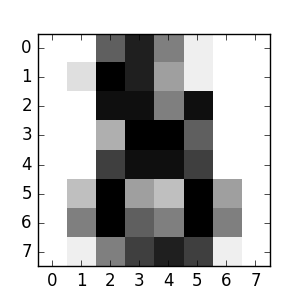

Statistical learning: the setting and the estimator object in scikit-learn¶
Datasets¶
Scikit-learn deals with learning information from one or more datasets that are represented as 2D arrays. They can be understood as a list of multi-dimensional observations. We say that the first axis of these arrays is the samples axis, while the second is the features axis.
A simple example shipped with the scikit: iris dataset
>>> from sklearn import datasets
>>> iris = datasets.load_iris()
>>> data = iris.data
>>> data.shape
(150, 4)
It is made of 150 observations of irises, each described by 4
features: their sepal and petal length and width, as detailed in
iris.DESCR.
When the data is not initially in the (n_samples, n_features) shape, it
needs to be preprocessed in order to be used by scikit-learn.
An example of reshaping data would be the digits dataset
The digits dataset is made of 1797 8x8 images of hand-written digits
>>> digits = datasets.load_digits()
>>> digits.images.shape
(1797, 8, 8)
>>> import pylab as pl
>>> pl.imshow(digits.images[-1], cmap=pl.cm.gray_r)
<matplotlib.image.AxesImage object at ...>
To use this dataset with the scikit, we transform each 8x8 image into a feature vector of length 64
>>> data = digits.images.reshape((digits.images.shape[0], -1))
Estimators objects¶
Fitting data: the main API implemented by scikit-learn is that of the estimator. An estimator is any object that learns from data; it may be a classification, regression or clustering algorithm or a transformer that extracts/filters useful features from raw data.
All estimator objects expose a fit method that takes a dataset
(usually a 2-d array):
>>> estimator.fit(data)
Estimator parameters: All the parameters of an estimator can be set when it is instantiated or by modifying the corresponding attribute:
>>> estimator = Estimator(param1=1, param2=2)
>>> estimator.param1
1
Estimated parameters: When data is fitted with an estimator, parameters are estimated from the data at hand. All the estimated parameters are attributes of the estimator object ending by an underscore:
>>> estimator.estimated_param_